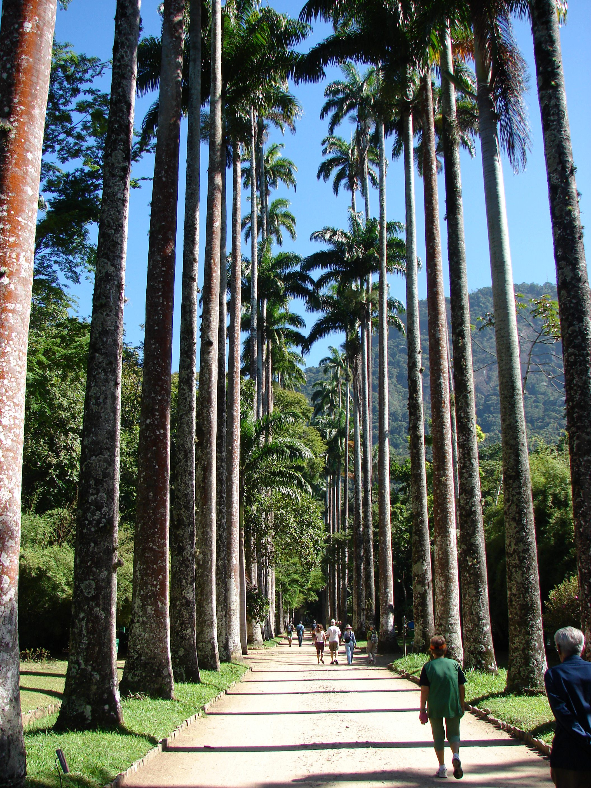

Palmeira Imperial
Roystonea oleracea

Características
- Família: Arecaceae
- Origem: Caribe
- Altura: 20-30 metros
- Diâmetro do tronco: 40-60 cm
Curiosidades
Introduzida no Brasil durante o período imperial, esta palmeira majestosa é um símbolo de poder e elegância. Suas folhas podem atingir até 4 metros de comprimento e são utilizadas tradicionalmente no Domingo de Ramos.

Escaneie este QR Code no jardim para acessar esta página